# Static ideas from Grüns / RYZE / Oats Overnight libraries, 2026-10-27
Source: Atria open API, ad-library/search?query=<brand>&media_format=image, pulled 2026-10-27. Grüns 187 ads (126 unique statics after visual dedupe), RYZE 42 image ads (28 unique), Oats Overnight 121 ads, 100% creator video (whitelisted UGC, one caption "20g protein, 40+ flavors" across 100+ creators). x = creative_duplicates (how many ad copies run the same image = scaling signal). Contact sheets: atria/gruns_sheet1-5.jpg, atria/ryze_sheet1.jpg, atria/oo_sheet1.jpg. Muse files: atria/muses/.
## What Grüns scales (by duplicate count)
- Flavor picker "Choose your flavor / click to reveal" with a mystery slot: x22, x12, x11, x10. Their most duplicated static. Slot-machine reels variant x8, x5.
- "GLP-1's new bestie" bear doodle: x12, x12, x18 (muscle anatomy), x13 (two-panel hair-loss sketch).
- Barbie doll two-panel "how I feel when I poop once a week / when I'm fibermaxxing": x11, x9.
- "F*ck feeling bloated" with CG belly: x8, x11. "F*ck your greens powder": x4, x3.
- "Don't buy these gummies!!" ugly kitchen photo with Notes-style text labels: x10, x5.
- "We're so sorry" apology letter (price/offer announcement in letter form): x8. RYZE runs the same device.
- "Thought this was going to be another 'healthy' flavor. Tastes like actual raspberry lemonade." POV hand holding bag with sticker labels: x3, x6. This is CandySnob verbatim.
- "Good taste ≠ bad for you" checklist: x7, x7.
## RYZE
- 90% Halloween offer statics (ghost wipes, pumpkin, free tumbler). Two outliers worth stealing: "We're hiring a DR copywriter" recruiting ad run as an ad (x9, 24 days), and the plush mascot "New at Publix" shelf shot (x1, 18 days, 4 variants).
- Hard stops for us: "From mom to MILF", "2025 me / 2026 me" body transformation.
## Ideas for SHA (angle Cravings, persona CandySnob unless noted)
### Unaware (entertain, no problem named; add an offer line in caption per findings.md)
1. Mystery flavor reveal. Three bags, one blurred with a ? sticker, "Guess the flavor. Click to reveal." Grüns x22. Token TapGoal. Variant: slot-machine reels of flavors.
2. "Thought this was another 'healthy' candy. Tastes like actual sour watermelon." POV hand holding the bag at the pool/couch, iPhone sticker labels, no stats. Grüns #95. Token TextOnSkin.
3. Apology letter. "We're sorry. We made candy that tastes like real candy and forgot to tell you about the fiber." Plain letter on cream, bag at the bottom. Grüns #89, RYZE #2. Token Letter (fallback family Advertorial). Motion 2026: Letter in the top spend-use band.
4. "Now hiring: professional candy snobs." Recruiting-ad layout, apply = try a bag. RYZE #6. Token LookingFor.
5. "Don't buy these if you like sad health candy." Ugly countertop photo with Notes-style labels. Grüns #63. Token DontBuy (already in our priority four).
6. Doll two-panel "me on sugar-free candy / me on Shameless" (face and posture only, no belly). Grüns #107. Token Meme. Offer caption mandatory (claim memes 0.27 here).
### Problem-aware (name the pain + reason or offer)
7. "Good taste ≠ bad for you" equation card with a 3-check list, bag right. Grüns #51. Token MythFact.
8. "Signs you're a candy snob" two-column checklist (left: symptoms, right: what you get). Grüns #126. Token XReasons.
9. Two-panel doodle "quitting candy, attempt #4 / not quitting candy." Grüns #49 sketch mechanic. Token Sketch.
10. GutFixer, not CandySnob: illustrated "the 3pm drawer raid" character sketch (Grüns bathroom-anxiety #79), and "Your doctor said more fiber. Not more broccoli." authority callout (Grüns pediatrician #97). Token Sketch / HeroClaim. Helps-verbs only.
11. Retail availability as a cold static: bag character on the Target shelf, "New at Target". RYZE #12. We already have "Your Target run isn't complete" at ROAS 1.04; this is its Unaware sibling.
Skip: iMessage/UGC screenshot (0.38 here, F-tier), Shrek-style licensing, body transformation, "hot girl tummy".
gruns_sheet1.jpg
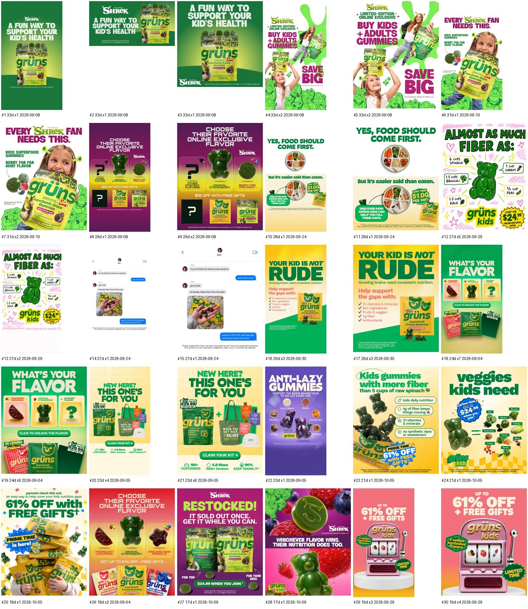
gruns_sheet2.jpg
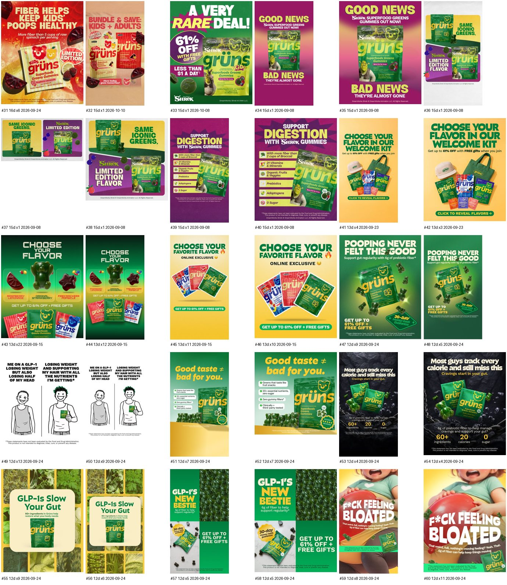
gruns_sheet3.jpg
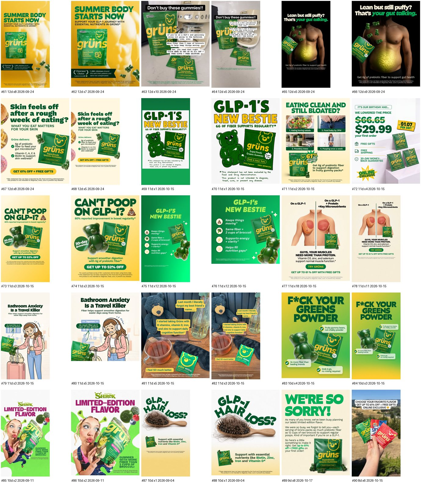
gruns_sheet4.jpg
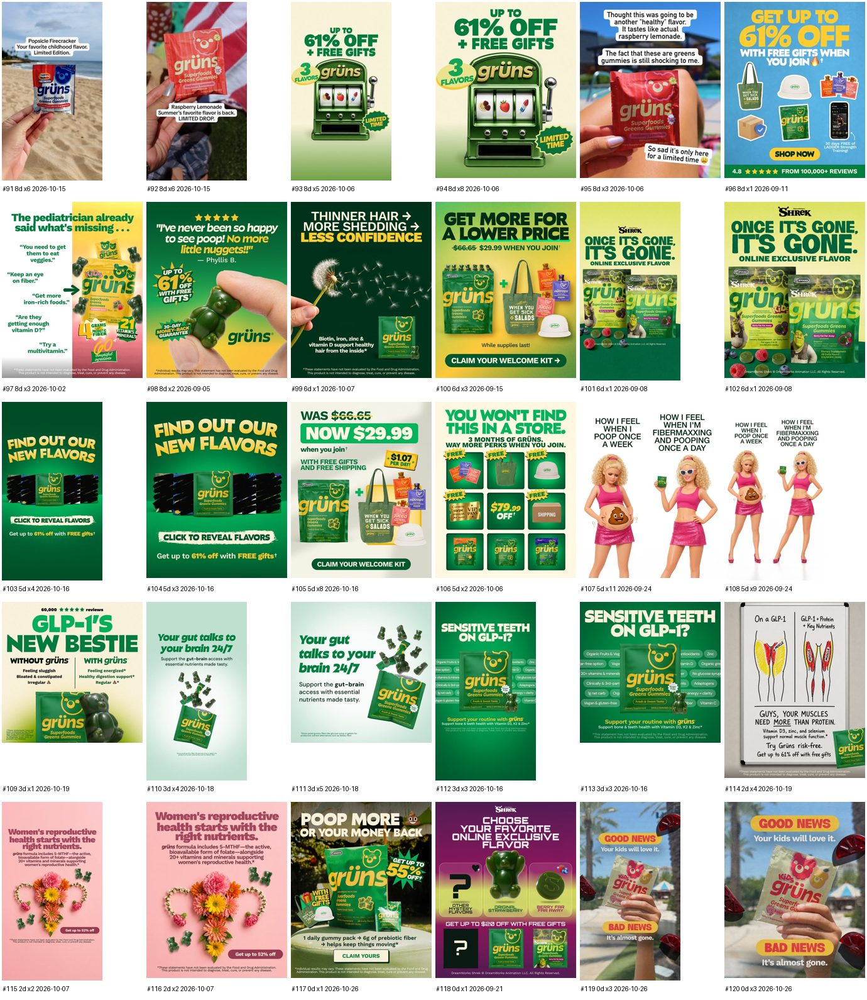
gruns_sheet5.jpg
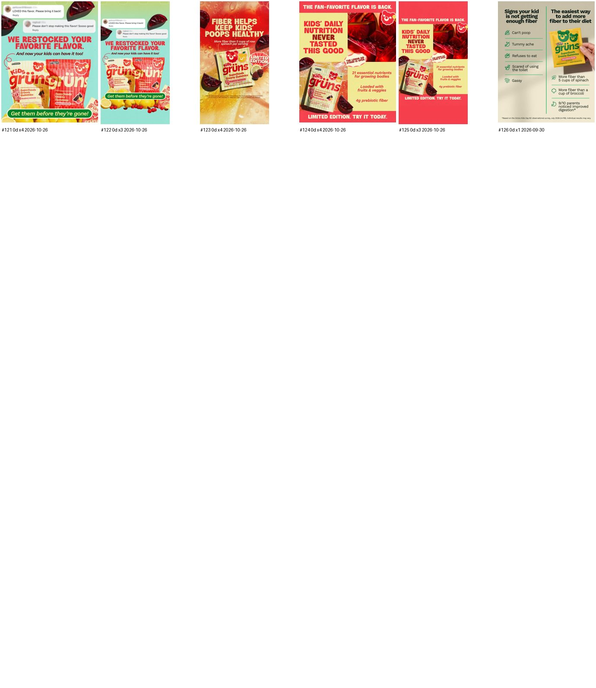
oo_sheet1.jpg
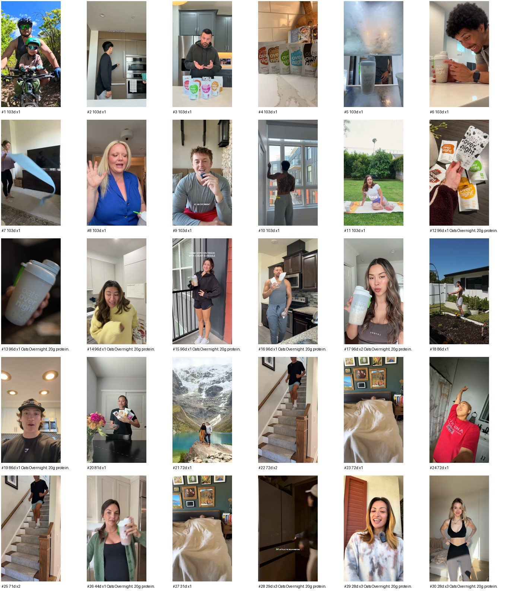
ryze_sheet1.jpg
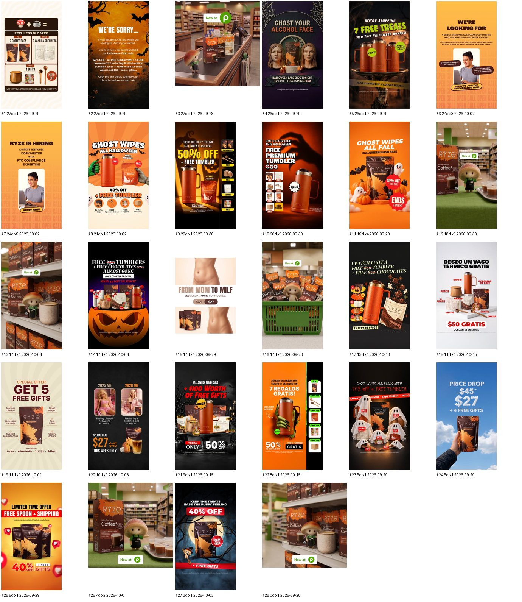
SmartSweets / Rotten (added 2026-10-27)
# Static ideas from SmartSweets / Rotten libraries, 2026-10-27
Pull: Atria open API search by brand, image + dco formats, dhash-deduped. SmartSweets 842 ads, 350 unique statics (12 sheets, sorted by copies running). Rotten 12 ads, 9 unique statics. x = copies of the same image running.
## What SmartSweets scales (retail brand, almost no DTC offer)
- Paddle stat comparison "3g SUGAR vs 38g SUGAR", our bag vs "The Other Fish Gummies" dark silhouette, two check rows (no synthetic dyes, naturally flavored): x25, 143d, their most duplicated static. Same card re-skinned per flavor (worms 22g, watermelon 33g, berries 37g, chews 25g, foam 35g, fruit snacks 7g/0g fiber). We already run this device (SH-16917 paddle); confirmation, not news.
- "WHOLE BAG = 3g SUGAR / ONE FISH = 4g SUGAR": x12, 78d. Equal-number contrast device, verbatim our canon.
- IN / OUT two-column (IN 3g sugar, OUT 38g): x4. Trend-list skin on the same paddle.
- Retailer availability + seasonal limited edition (Costco 10-pack x19, Target, Walmart value size, Sour Snowflakes, Merry Mix, Strawberry Hearts, Berry Bunnies, Sour Zombie Buddies, Pink Lemonade): most of the library. Not transferable to a DTC offer page except as "new flavor drop" framing.
- "Leaving these behind in 2026" notebook page with crossed-out list (high fructose corn syrup, synthetic dyes, artificial flavors, added sugar) and "eating SmartSweets instead": x3, Jan window. SugarQuitter / New Year problem-aware.
- "Team Sweet / Team Sour" two-panel pick-a-side: x7. Same engagement mechanic as Grüns' flavor picker.
- "Calling all candy lovers" limited-edition hero: x2. That headline is a CandySnob callout sitting unused in our account.
- "Sweet surprise, not a sugar rush" (fruit snack vs the other fruit snack, blank white bag): x3.
- Comment-overlay statics (real comments floating over product): x2, 32d. On our kill list (UGC/testimonial screenshot statics), skip.
- POV hand holding bag outdoors with 3 checkmarks: x2, 66d. Weak scale.
- Founder holding box "what started as a tiny, sweet idea": x19, 27d, single image. Founder-story static, no spend signal here but it is their only human-led static that got copies.
## What Rotten runs (young, loud, protein-pivot)
- "Gummy candy colored by superfoods, not chemicals. 60% less sugar than the other guys": x18, 64d. One ingredient claim as the whole ad.
- "Your boring protein bar vs Chewerz by Rotten" checklist duel (still tons of sugar, looks like a turd, mystery ingredients vs half the sugar, packed with protein): x4. Same bar-attack we already run, in their voice.
- "Award winner" badge over candy pile: x8, 91d. Third-party proof as the headline.
- "The freakiest way to power up", "Protein power up" icon row: x4 to x8. Brand-voice product shots, nothing to port.
## Steals for SHA, mapped to execution tokens
Unaware / CandySnob
- "Calling all candy snobs" limited-drop hero, candy-brand art direction, one line under it: "70 calories a bag. Tastes like the real thing." Direct-callout headline formula, offer in caption. Token: Packshot hero, headline-first (SmartSweets #217).
- "Team Sour / Team Sweet" pick-a-side two-panel, Mini Bites vs Sour on each side, caption "vote in comments, winner gets 46% off this week". Token: TapGoal / picker (SmartSweets #48, #85). Pairs with Grüns' flavor picker as a lane, run one not both.
- IN / OUT list, candy-snob voice: IN: sour watermelon, fiber, 70 calories. OUT: 185 calories, 45g sugar, "healthy candy that tastes like a vitamin". Token: XReasons / list card (SmartSweets #91).
Problem-aware / CandySnob, SugarQuitter, GutFixer
- "Leaving these behind in 2026" notebook list, crossed out: the 3pm candy bar, 45g sugar, "I'll start Monday". Bottom line: "eating Shameless instead". January wave, SugarQuitter. Token: PhoneNote-adjacent paper list (SmartSweets #143). Note: our research found Notes-app statics on the kill list; this is a physical notebook with a product packshot, test as exploration only.
- "Whole bag = 70 calories / one regular candy bar = 185" equal-number contrast on a Mini Bites packshot. Already canon; refresh with the full-sugar comparator numbers. Token: Paddle (SmartSweets #20).
- "Sweet surprise, not a sugar rush": our bag vs a blank white bag labeled "the other gummies", three rows (fiber 26g vs 0g, sugar 3g vs 45g, calories 70 vs 185). Measures their product, never names a brand. Token: Paddle, generic comparator (SmartSweets #105).
- "Award winner" style proof badge: we have no award, so the port is "4.8 stars, 12,000 reviews" badge over a candy pile, headline "the candy people actually finish". Token: Review badge over product spill (Rotten #2). Verify the review count before briefing.
Skip
- Retailer availability cards, seasonal shapes (Snowflakes, Hearts, Bunnies): retail-only.
- Comment-overlay statics: kill list.
- Rotten's protein-bar insult copy ("looks like a turd"): off-brand for a 45+ woman and a named-category attack.
- Founder-holding-box: Tomas is not on camera for statics.
Rotten x18 64d · "colored by superfoods, not chemicals" one-claim ad
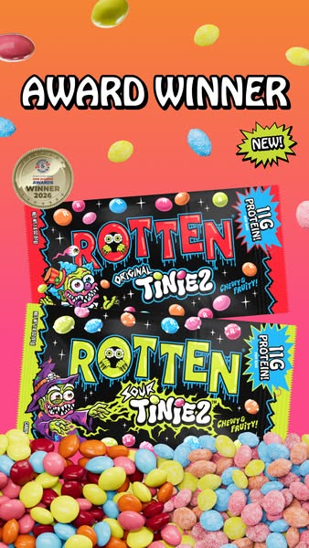
Rotten x8 91d · "Award winner" badge over candy pile → star-rating badge port
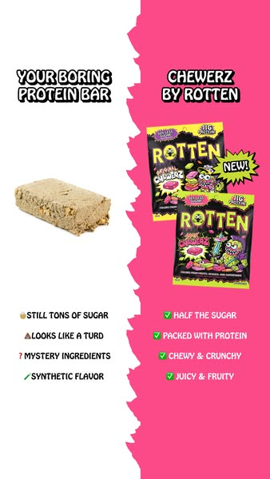
Rotten x4 · "Your boring protein bar vs Chewerz" checklist duel (voice off-brand)
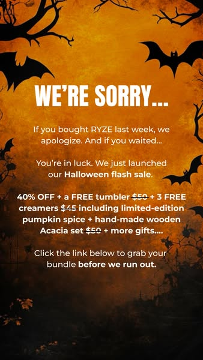
RYZE · apology letter device → LetterRYZE · "Now hiring" recruiting ad → LookingFor ("professional candy snobs")RYZE · "New at Publix" shelf character → New at Target
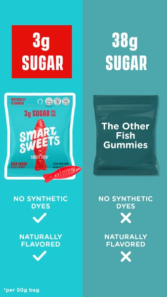
SmartSweets x25 143d · paddle "3g vs 38g sugar" vs The Other Fish Gummies (already our SH-16917 device)
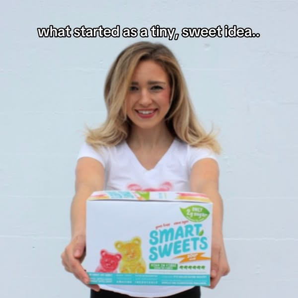
SmartSweets x19 27d · founder holding box (their only human-led static with copies)
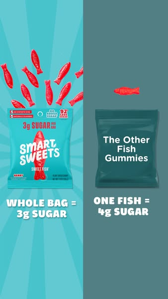
SmartSweets x12 78d · "Whole bag = 3g / one fish = 4g" equal-number contrast
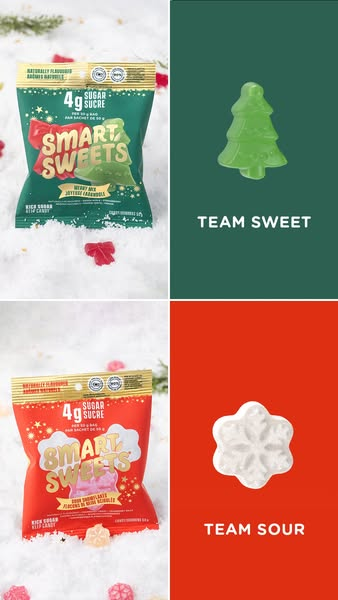
SmartSweets x7 · Team Sweet / Team Sour pick-a-side → picker
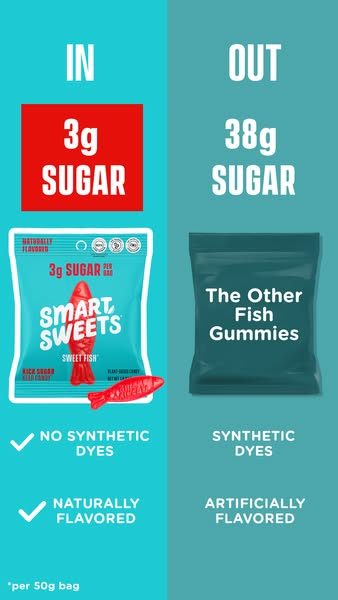
SmartSweets x4 · IN / OUT list → XReasons skin
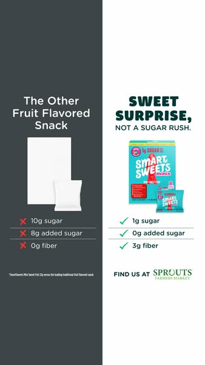
SmartSweets x3 · "Sweet surprise, not a sugar rush" blank-white-bag comparator
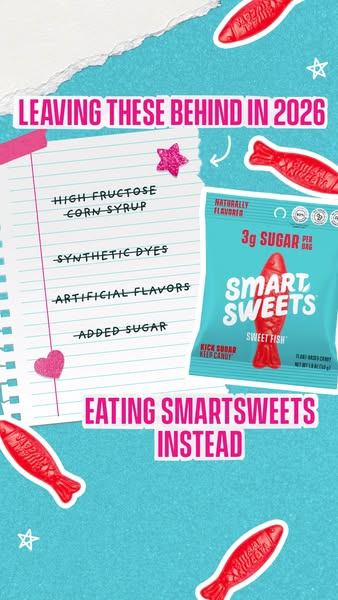
SmartSweets x3 · "Leaving these behind in 2026" crossed-out notebook → SugarQuitter, exploration only
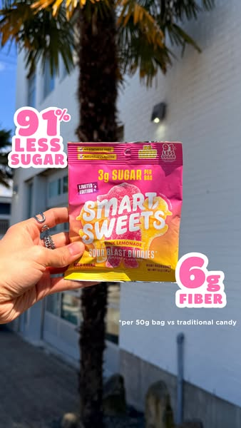
SmartSweets x2 66d · POV hand holding bag outdoors + 3 checks (weak scale)
SmartSweets x2 · "Calling all candy lovers" hero → "Calling all candy snobs"
Format research
# Static formats for Unaware and Problem-aware, research 2026-10-27
Internal: SHA Meta statics, 2025-10-27 to 2026-10-26, 3,316 creatives over $50 spend, $2.91M, BQ `ai.asset_tagging_static` awareness_level + static_format_family. ROAS 12-month, not month-matched (directional only). Query: q_static12m.sql, data static12m.json, contact sheet sheet.jpg.
## Unaware: no internal evidence
22 statics tagged Unaware, $130k. 2 carry 98% of it and both are mis-tagged on inspection: a macro candy close-up with a "record-breaking candy" caption and a "sale is ending" box stack (ROAS 1.46, offer ad). True Unaware statics (memes, swimwear lifestyle, "guess which flavor isn't ours") total about $3k at ROAS 0.4 to 1.0. The account has never funded a real Unaware static.
## Problem-aware: what carried and what sank (12m)
| Family | spend | ROAS | note |
|---|---|---|---|
| offer_promo w/ problem headline ("candy drawer, solved") | $16k | 1.05 | problem line + offer frame |
| listicle ("kills the 3pm craving", 5 bullets) | $8k | 0.97 | 3 of 5 scaled ads hit |
| hero_claim ("Poop more", "Target run") | $48k | 0.91 | 2 of 10 scaled hit |
| product_hero + pain caption | $243k | 0.72 | 0 of 10 scaled hit |
| problem_solution (brick gag) | $29k | 0.64 | |
| ugc_screenshot ("why pharmacists eat candy") | $18k | 0.38 | |
| meme_cultural w/ claim | $7.5k | 0.27 | |
| educational_explainer | $1k | 0.33 | |
Headline pattern, Unaware+Problem: bold_claim 0.99, comparison 0.86, question 0.70, pain_callout 0.66 ($47k, 0 hits of 8 scaled), cliffhanger 0.48, customer_quote 0.18.
## External (2025-26)
- Motion 2026 ($1.29B, 579k creatives): hit rate Offer-First 8.6%, Demo 8.1%, Testimonial 6.5%, Unboxing 9.8%; Listicle, Split Screen, Us vs Them, Headline in the 5-9% band; Letter, Post-It, Unconventional Text Placement top spend-use ratio. Hook tactics by hit rate: Newness, Sale, Price Anchor, Urgency, Announcement, Confession (9), Curiosity (11), Bold Claim (14), Relatability (21). No awareness split, no ROAS. https://motionapp.com/library/research/creative-benchmarks-2026/top-visual-formats
- Denney 2026 tier list: F-tier = testimonial statics, Notes-app/UI ads, press ads. Us vs Them = Solution-aware tool. Unaware = video shorts, not statics. "Reasons why" text statics top performers across 365 days; tweet/Reddit-style statics strong traction. https://www.aimerce.ai/topics/dara-denney-lazy-meta-ad-formulas-89
- Alex Cooper (25+ 8-9 figure brands): 90% of static winners = comparison, ugly-image + testimonial headline, promo. Cold test = "would a stranger care"; specific problem line beats vague emotion. https://alexcooper.beehiiv.com/p/7-rules-for-high-converting-static-ads
- Barry Hott: native relevance, not ugliness; 3-static cold set = product+USP, lifestyle in-use, testimonial. https://www.linkedin.com/posts/binghott_making-ugly-ads-is-not-about-making-ads-as-activity-7293710348040175617-J32i
- admetrics: anti-ad (complaint/satire) and platform-native for cold; one idea in ten words. https://www.admetrics.io/post/five-static-ad-formats-outperforming-video-in-2026
- Levinger: 3 statics per emotional insight, 7-14 days, then expand.
## Read
1. Static Unaware is unproven everywhere, including here. Experts send Unaware to short video. The only Unaware-shaped statics that converted for SHA carried an offer (sale static 1.46; offer memes 1.33 vs claim memes 0.40 in the meme report).
2. Problem-aware statics that work name a specific problem in the headline AND give a reason or an offer: listicle, bold claim + product, offer frame. Pain caption on a packshot is the account's biggest static sink ($243k at 0.72, zero hits).
3. Kill list for both stages: Notes-app, testimonial/UGC screenshot, meme with a claim, explainer, brick gag.